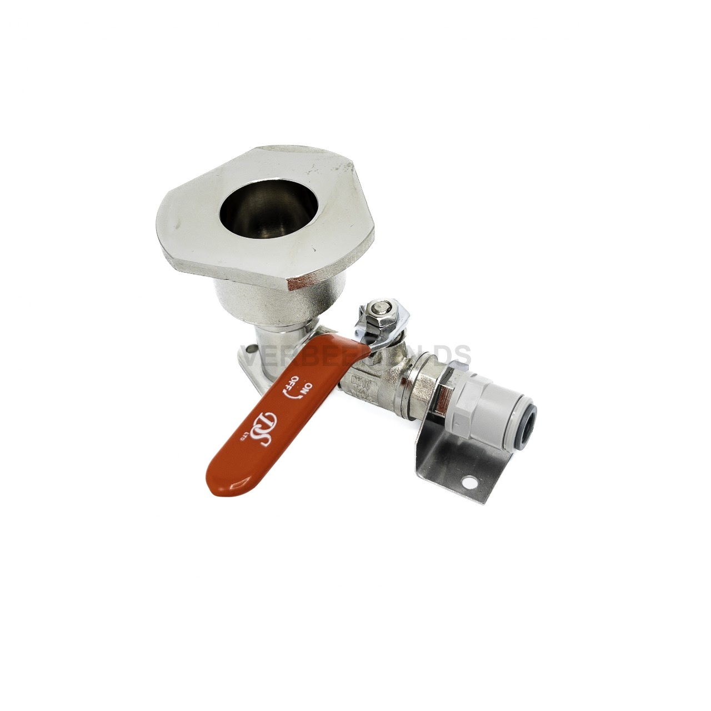

Rinse adapters, bottles, adapters and rinsing accessories per coupling type — the part maintenance companies and breweries reorder most often.

Rinse adapter · with shut-off valve
A rinse adapter connects a cleaning bottle or unit to the beer line, letting cleaning fluid circulate through the entire line. Every connect and disconnect during a cleaning cycle loads the seal — which is why this is usually the first part that needs replacing in a tap installation, not the line or the coupling itself.
Tell us your installation's coupling type — we confirm exact compatibility with your quote request.
Connecting piece between cleaning bottle and beer line, matched to your coupling type.
Core productBottles and rinsing units for circulating cleaning fluid through the line.
BottlesConnects differing coupling types so existing equipment can be reused.
AdapterSupporting equipment for rinsing and post-rinsing after cleaning.
AccessoriesLock in your coupling type and volumes once — every reorder after that moves faster.
A rinse adapter connects a cleaning bottle or unit to the beer line so cleaning fluid can circulate through the full line without loading the fixed tap coupling. Without proper cleaning, residue builds up that affects taste, foam and hygiene.
Rinse adapters are wear parts: the seal and valve mechanism wear down through repeated connecting and disconnecting during every cleaning cycle. Replace if you see leaks, poor sealing or stiff operation. Maintenance companies typically order these in volume to always have stock on hand.